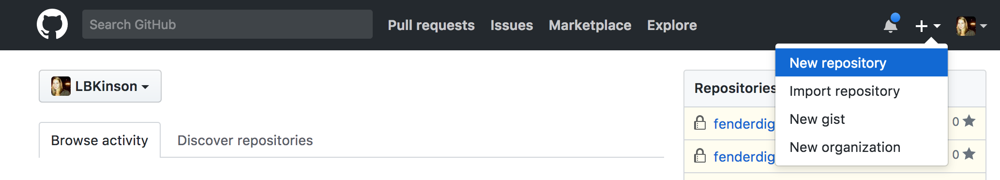
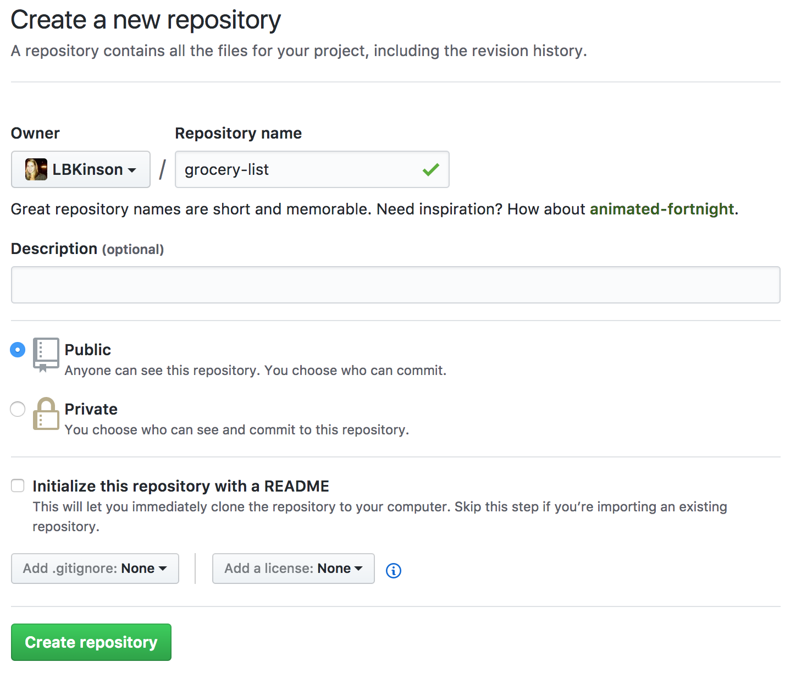
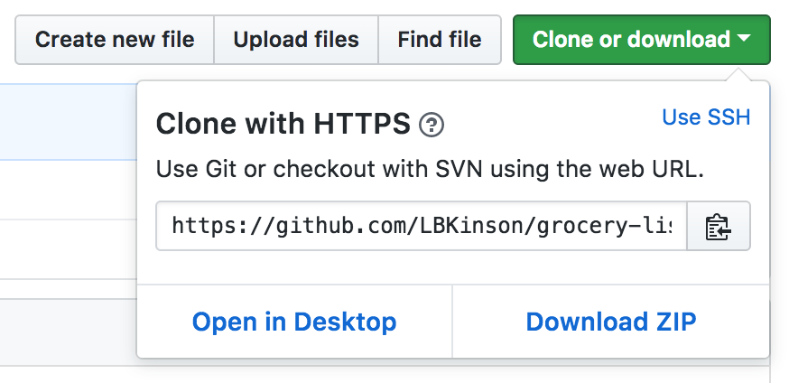
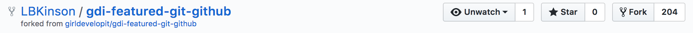

Intro to Git and Github
Welcome!
Girl Develop It is here to provide affordable and accessible programs to learn software through mentorship and hands-on instruction.
Some "rules"
- We are here for you!
- Every question is important.
- Help each other.
- Have fun.
Welcome!
Tell us about yourself.
- Who are you?
- Do you have any pets?
- What's your can't-live-without snack?
- What do you hope to get out of the class?


Thanks, Fender

We're hiring!
What we will cover in this class
- What is version control and why should we care?
- Basics of Git: the essential commands
- GitHub (or, a little Git between friends)

What is version control?
Version control allows you (and your team) to…
Collaborate
Create with other people.
Track and revert changes
Mistakes happen. Git allows us too "back in time" to fix something that went wrong.
You already manage versions of your work!
Do you have files somewhere that look like this?
Resume-September2017.doc
Resume-for-Duke-job.doc
ResumeOLD.doc
ResumeNEW.doc
ResumeREALLYREALLYTHISONE!!.doc
You invented your own version control!
But, we can do it easier and faster with Version Control tools.
You might already use VC tools!
Have you ever used...
- Google Docs?
- Dropbox?
- Wallpaper?
These are all examples of version control!
Brief history of Version Control
1990s — CVS (Concurrent Version Systems)
2000s — SVN (Apache Subversion)
2005 — Git
Chapter 1: Git is Born
The first commit, April 2005
commit e83c5163316f89bfbde7d9ab23ca2e25604af29
Author: Linus Torvalds <torvalds@ppc970.osdl.org>
Date: Thu Apr 7 15:13:13 2005 -0700
Initial revision of "git", the information manager from hell
Chapter 2: Git is Named
- Random three-letter combination that is pronounceable, and not actually used by any common UNIX command. The fact that it is a mispronunciation of "get" may or may not be relevant.
- Stupid. Contemptible and despicable. Simple. Take your pick from the dictionary of slang.
- When it works: "global information tracker"; you're in a good mood, and it actually works for you. Angels sing, and a light suddenly fills the room.
- When it breaks: "g*dd*mn idiotic truckload [of sh*t"]
Version Control Types
Centralized Version Control
Examples: CVS, SVN, Perforce
Distributed Version Control
Examples: Git, Mercurial
Centralized Version Control

One central server, each client (person) checks out and merges changes to main server
...NOT how Git works!
Distributed Version Control

Each client (person) has a local repository, which they can then reconcile with the main server.
...AKA how Git does it!
Why Use Git?
- Fast! Access information quickly and efficiently.
- Distributed! Everyone has her own local copy.
- Mind-bogglingly scalable! Enables potentially thousands (millions!) of developers to work on a single project.
- Local! You don't need a network connection to use it. You only need a remote server if you want to share your code with others (e.g., using GitHub).
- Branches! Keep your coding experiments separate from code that is already working.
- Accountability!Everyone has a local copy of the shared files and the history.
Installation and Setup
Install git from here: https://git-scm.com/downloads

Installation and Setup
Setup name and email in git config
$ git config --global user.name "Your Name Here"
# Sets the default name for git to use when you commit
$ git config --global user.email "your_email@example.com"
# Sets the default email for git to use when you commit
$ git config --list
# Check your config variables... let's do it!
Installation and Setup
Setup SSH keys
SSH keys allow you to interact with your Git server without having to type your username and password all the time.
Installation and Setup
Setup the Default Text Editor
By default Git is set up to use Vim as the text editor.
(esc + :q or :q! to get out of Vim)
Follow these instructions to change your default text editor to whatever you prefer.
Your First Local Repository
Go to home directory
$ cd ~/
$ pwd #make sure you're in your home directory
Create a "working directory"
$ mkdir grocery-list
$ cd grocery-list
Initialize repository with Git
$ git status
$ git init
$ git status
Add Files
Create a README.md file in your new folder
Check repo status
$ git status
Tell Git to track our new file
$ git add README.md
$ git status
File is now tracked by Git
Changes and Commits
Open README.md and add some more text
$ git status
Stage and commit the change
$ git add README.md
$ git status
$ git commit -m "Initial commit. Added README to repository."
A good commit message acts like a headline to a newspaper article (but not clickbait!)
What did we just do?
How is this all different than just saving a file?
- When we add a new file, we tell Git to add the file to the repository to be tracked.
- This is also called staging a file. A snapshot of our changes is now in the staging area (aka the index, aka the cache), ready to be saved.
- A commit saves the changes made to a file, not the file as a whole. The commit will have a unique ID (hash) so we can track which changes were committed when and by whom.
Look at Your Progress
$ git status
$ git log
commit [HASH HERE]
Author: Your name <you@your-email.com>
Date: [DATE HERE]
Initial commit. Added README to repository.
Let's Try It!
- Make changes to
README.mdand make some more commits. - Add another file (or image!) to your project and commit that.
- Change more than one file at a time, and practice making commits where you stage only one file, or both files together.
Don't forget to run git status regularly so that you can see what is happening at each stage!
Seeing changes
Open README.md and make some changes to the file.
$ git status
$ git diff
diff --git a/README.md b/README.md
index e69de29..f5f34a6 100644
--- a/README.md
+++ b/README.md
@@ -0,0 +1 @@
+milk
+cheese
+bread
+mango slices
+peanut butter cups
This command shows exactly what is different.
Undoing local changes
If you haven't staged/committed yet
Open README.md and make some changes to the file.
$ git status
$ git checkout README.md
Look at README.md. Your changes are gone. You've gone back to the previous commit state.
Remove a file from staging
Create a new file `things_for_bbq.txt`
$ git status
$ git add things_for_bbq.txt
$ git status
$ git reset things_for_bbq.txt
$ git status
The file is removed from staging, but your working copy will be unchanged.
Undoing staged changes
Open README.md and add something to your grocery list that you hate
$ git status
$ git add README.md
$ git status
$ git reset HEAD README.md
$ git status ## your changes were unstaged
$ git checkout README.md
$ git status
Look at README.md. Your changes are gone and the file is removed from staging.
Huzzah, no sweetbreads in my kitchen!
Undoing committed changes
Git lets you go back to any previous commit.
Open README.md and add back the thing you hate
$ git add README.md
$ git status
$ git commit -m "Making a change I will soon regret"
$ git status
$ git log --oneline
a82c87f (HEAD -> master) Making a change I will soon regret
21f659c Initial commit. Added README to repository.
Okay, I see the change… now how do I remove it?
Undoing committed changes
$ git revert a82c87f
# Your default editor will open here
# you can just save it (`:wq`) and close it as is.
$ git log --oneline
fa8a54f (HEAD -> master) Revert "Making a change I will soon regret"
a82c87f Making a change I will soon regret
d4c2432 added new text
21f659c initial commit
Notice that the original, regrettable commit is still there, but now you also have another commit that undoes the changes introduced by the original one.
To Track or not to Track?
You decide what goes into version control.
You can—and should!—leave some things out.
libraries, .dotfiles, api keys...
Git shows you an easy way to do this: .gitignore
Adding .gitignore
Create `.gitignore` and a new file `secret_things.md`. Add some new text to `secret_things.md`
$ git status
Now add `secret_things.md` to your `.gitignore` file.
$ git status
Git has received your command and removed the file from what it's watching!
Branching

A branch is a copy of your repo that lets you isolate changes and leave the original copy untouched. You can choose to combine the branches in whole or part with the "master" copy later.
Why Branch?
- Develop different code on the same base
- Conduct exploratory work without affecting the work on master branch
- Incorporate changes to your master branch only when you are ready
- Make it easier to collaborate
Branching
Create a new branch called cake_ingredients
$ git checkout -b cake_ingredients
Add new lines to README.md
$ git add README.md
$ git commit -m "Adding changes to cake_ingredients"
Switching Branches
See all branches. Branch with * is active
$ git branch
$ git branch -v
Switch to master and look at README.md
$ git checkout master
Switch to cake_ingredients and look at README.md
$ git checkout cake_ingredients
Merging
Copying changes from one branch to another is called merging.
Switch to master and merge the changes from the branch cake_ingredients
$ git checkout master
$ git merge cake_ingredients
$ git log --oneline
Merging—When Things Go Wrong
What is a merge confict?

Merge Conflicts
Change first line in README.md in master branch
$ git add README.md
$ git commit -m "Changing first line in master"
Change first line in README.md in cake_ingredients branch
$ git checkout cake_ingredients
# open README.md and change first line
$ git add README.md
$ git commit -m "Changing first line in cake_ingredients"
Merge Conflicts
Merge from master into cake_ingredients
$ git merge master
You will be notified of a conflict. Go to the file and fix the problem. Then commit your edits.
Git + Friends = GitHub

What is GitHub for?
- GitHub allows users to host Git repositories publicly and privately
- Open source projects host or mirror their repositories on GitHub
- Push your own code up for others to use or contribute to
- Read, copy, and learn from the code in other people's repositories
- Contribute to open source projects (like the Girl Develop It website!)
GitHub
Create your first remote repository
You will need to be logged into your GitHub account to do this.
GitHub
Create your first repository
GitHub
Set up remote repo to sync with your local repo
After you click the big green button to create your repo, follow GitHub's instructions for next steps.
$ git remote add origin https://github.com/YOUR-GITHUB-USERNAME/grocery-list.git
$ git push -u origin master
# that -u is an option that signals that you are setting
# a tracking reference to the remote branch as the default;
# you only need to use this flag the first time
Now check out your GitHub repo online!
Git Structure & Workflow
Now, GitHub is acting as our remote repository

GitHub
Push to Repo on GitHub
Edit README.md
$ git add README.md
$ git commit -m "Updating readme file"
$ git push origin master
Now check out your GitHub repo online!
Shared Repos
If team members are contributing to a single repo, each member of the team will want to make sure that she has everyone else's changes before pushing her own changes to the remote repository.
Cloning
If you want to use or contribute to a repository, you have to clone it to your computer.
$ cd ../
$ git clone https://github.com/LBKinson/grocery-list.git
$ cd grocery-list
$ git remote -v
Share Your Repo
Clone into a neighbor's repo
$ git clone https://github.com/LBKinson/grocery-list.git
Pulling
Always pull before you push!
Commit local changes first
$ git commit -m "My latest commit"
Get changes that have been pushed
$ git pull origin master
Git may prompt you to fix any conflicts, then commit
$ git commit -m "Fixing merging conflicts"
Now you are ready to push local changes to GitHub
$ git push origin master
Pull Requests
Commonly used to review code, pull requests allow you to submit code to a public repo.
In your neighbor's repo, checkout a new branch and add a file with new text
$ git checkout -b lauras-groceries
$ touch laura_loves_cheese.md
$ git status
$ git add .
$ git commit -m 'Putting cheese on your grocery list'
$ git push origin lauras-groceries
Pull Requests
Now online in their repo, open a pull request with the base as `master` comparing `lauras-groceries`
Now your neighbor can comment on your code, ask clarifying questions, and approve it when they're ready to merge. All in a publically accessible, on-the-record space.
Forking
There are MILLIONS of public repositories on GitHub.
There are huge open source projects (including Git!)…
…and small projects like these slides.
A fork is just a copy of a repository, saved to GitHub.
Forking

After you fork the repository, it shows up in your repositories.
Let's Try It! Fork this repo.
You can only fork repos through the GitHub website.
Girl Developer
and the Three Repositories

Connect to the Original
To sync your fork with the original repo, you need to add another remote named upstream
$ git remote -v
$ git remote add upstream https://github.com/GDIBTV/git-resources.git
$ git fetch upstream
git fetch downloads Git references not present in your local repository, but does not modify your files (think of it like getting a table of contents rather than the contents themselves)
Let's Try It!
- Make changes to the
git-resourcesrepository and push to your remote. - Submit a pull request to the original repository.
- Explore other repos on GitHub and get excited about the world that is now open to you!
Thank You!
Keep in touch!